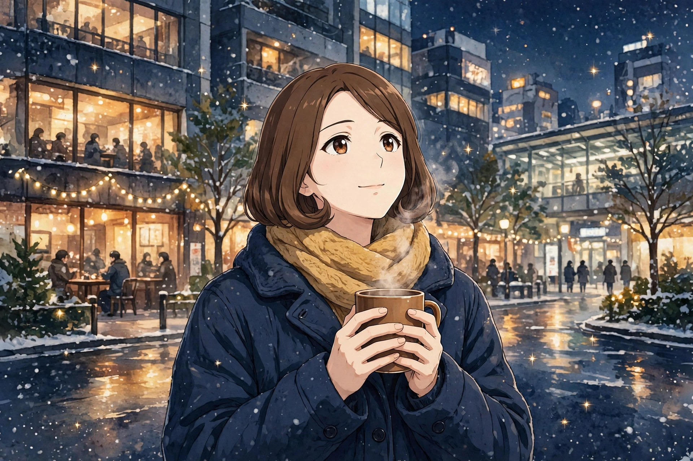

梅田で忘年会続きに気になる疲労感｜要因の整理とセルフケア、受診の目安ハウツー

梅田で働く・暮らす方へ。忘年会が続く時期に「朝から体が重く感じる」「休んだはずなのに疲れが残る気がする」と感じる疲労感について、一般的な解説と考えられる要因の整理、無理のない範囲のセルフケア、医療機関への受診の目安をまとめました。一般的な健康情報としてお読みください。
#梅田 忘年会 疲労感#忘年会続き 疲れ#疲労感 セルフケア#年末 会食 疲れ#梅田 女性専用 サロン 疲労感
忘年会続きに気になる疲労感とは（一般的な解説）
疲労感とは、病名ではなく、「体が重く感じる」「だるさが残る気がする」「休んだはずなのにすっきりしない」と感じる感覚を表す言葉として使われることがあります。ふだんは週末に休めば気にならなくなる方でも、12月に入って忘年会が続く時期は、朝から体が重く感じたり、仕事の合間にぼんやりしたりする日が増えた、と感じることがあります。会食の予定が週に何度も入る時期は、楽しい時間である一方で、帰宅が遅くなる日や、食事の時間がずれる日が重なりやすく、ふだんの生活リズムとは違う過ごし方が続きます。梅田では、駅ビルや地下街、飲食店が集まるエリアで会食をする機会も多く、にぎやかな夜の時間が長くなりやすい環境もあります。感じ方には個人差が大きく、同じ週でもすっきり目覚められる日もあれば、疲れが残る気がする日もあるとされます。
大切なのは、「ふだんの自分と比べてどうか」「どんな日の翌日に気になりやすいか」という視点です。会食が続いた週なのか、帰宅が遅かった日の翌日なのか、寒さが厳しい日なのか——気になりやすい場面を簡単に振り返っておくと、自分の傾向がつかみやすくなります。この記事では、忘年会続きに気になる疲労感の一般的な解説と、背景として考えられる要因の整理からお伝えします。なお、疲労感の感じ方だけで体の状態を判断することはできません。気になる変化が続く場合は、後半の「受診の目安」もあわせてご確認ください。
考えられる要因の整理
1つ目は、会食・飲食と帰宅の遅れによる生活リズムのずれです。忘年会の席では、食事の時間がふだんより遅くなったり、飲食の量が増えたりする日が重なりやすくなります。帰宅が遅くなると、入浴や眠る準備の時刻も後ろへずれ、翌朝の目覚めが重く感じられることがあるとされます。会食が週に何度も続く時期は、こうした小さなずれが積み重なり、疲労感につながっているかもしれません。ただし、感じ方には個人差があり、「会食のせい」と決めつけられるものではありません。
2つ目は、睡眠時間の短縮です。帰宅が遅い日が続くと、眠る時刻が遅くなり、睡眠そのものが短くなりやすいとされます。眠る直前までスマートフォンを見続ける日が重なると、目がさえた感じが残り、眠りに入るまでの時間が長く感じられることも挙げられます。会食のない日も含めて就寝時刻が日によって大きくずれる週は、体が休む区切りをつかみにくく、疲れが残る気がする、という声も聞かれます。
3つ目は、冬の寒さと移動の負担です。12月の梅田は、暖房のきいた室内と冷たい外気を行き来する移動が多く、駅までの帰り道で体が冷えて縮こまるように感じることもあります。忘年会の帰りは荷物を持って歩く時間も長くなりやすく、寒さの中で体へ力が入ったまま帰宅する日も少なくありません。こうした寒さや移動の負担が、翌日の重さにつながっているかもしれません。
4つ目は、年末の仕事の追い込みが重なることです。年内の締め切りや引き継ぎ、年越しの支度などが重なる時期は、気を張る時間が長くなり、会食の席でも気持ちが切り替わりにくいことがあるとされます。要因はひとつではなく、その日の予定や体調、寒さによって組み合わせが変わるため、思い当たるものをひとつずつ見直すことが大切です。
忘年会が続く時期のセルフケア
まずは「会食のない日は、早めに帰宅して休む」ことです。忘年会が続く週こそ、予定のない日の夜を空けておく、帰宅後の用事を最低限にして休む時間を先に確保する、といった過ごし方は、無理のない範囲で取り入れやすい工夫です。翌日の予定を詰め込みすぎないことも大切で、朝の支度に余裕を持てるだけでも、一日の始まりの感じ方が変わることがあります。会食の前日や翌日は、買い物や用事をまとめすぎず、体を休める区切りを作ってみてください。
次に「帰宅したら、湯船で温まる」ことです。その日の夜は、湯船にゆっくりつかって体全体を温める、温かい飲み物を一品添える、といった過ごし方は、冷えた体をいたわる基本とされます。寒い帰り道のあとは、首元や足元を冷やさないよう、部屋着を一枚重ねる工夫も挙げられます。湯船につかる時間がない日は、シャワーで首・肩まわりを温めるだけでも、区切りとして取り入れやすい方法です。低温やけどには十分注意し、温熱用品を使う場合は使い方の表示を確認してください。
あわせて「軽いストレッチや深呼吸を挟む」ことも挙げられます。入浴後や眠る前に、肩をゆっくり回す、背伸びをする、ゆっくり息を吐く深呼吸を数回行う、といった動きは、短い時間でも取り入れやすいものです。強く伸ばしたり、痛みを感じるほど動かしたりする必要はありません。眠る前の画面時間を区切ることも、夜の過ごし方の工夫として挙げられます。ただし、セルフケアはあくまで日常の疲労感への対処です。特定の方法に頼りすぎたり、気になる状態を我慢して様子を見続けたりしないようにしてください。重さが強い日は、ケアよりもまず休むことを優先することも大切です。
受診の目安｜こんなときは医療機関へ
忘年会続きの疲労感の多くは、生活リズムのずれや睡眠時間の短縮、寒さといった日常の要素が重なって感じられるとされますが、中には医療機関での確認を優先したいサインもあります。「疲労感が長く続き、忙しさが落ち着いたあとも変わらない」「疲れのために仕事や家事など日常生活に支障が出る」「胸の苦しさや動悸を伴う」「発熱を伴う」「日中の強い眠気が続き、運転や作業に支障が出る」といった場合は、セルフケアで様子を見続けず、内科など医療機関への受診をおすすめします。年末年始は医療機関の診療日が限られる時期でもあるため、気になるサインがある場合は、早めの時期に相談先を確認しておくことも大切です。
また、疲労感と思っていた背景に、体の状態など、検査で初めて分かる要素が関係していることもあるため、気になる状態が続く場合は一度相談してみてください。当店のケアはリラクゼーションを目的としたボディケアで、疲労感や病気を診断したり、それらに対応したりするものではありません。医療機関での確認を優先したうえで、日常のコンディションを整える選択肢のひとつとしてご利用ください。
当店でのケアとサロンのご案内
ステラポラリスは、大阪・梅田エリアのレンタルサロンで施術する女性専用・完全予約制のサロンです。2026年11月4日に開院しました。営業は月〜土17:00〜22:00（日曜休み）、施術はオイルマッサージと美容整体、料金は90分10,000円です。ご予約はLINEで受付中です。
場所は大阪市北区堂山町12-5 ロイヤルハイツ梅田Ⅱ 303号室（レンタルサロンACE内）、中崎町駅から徒歩5分・阪急梅田駅から徒歩8分です。担当は施術歴30年・鍼灸師資格を持つセラピスト1名で、当店では鍼灸施術は行いません。